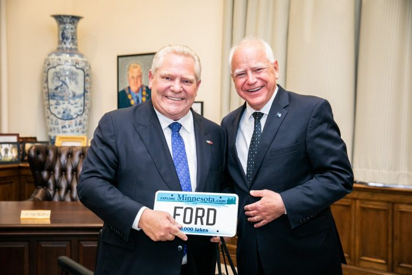

2024 年 6 月，省长福特和明尼苏达州州长蒂姆·沃尔兹在安省省长办公室共度美好时光。
美国副总统卡马拉·哈里斯宣布沃尔兹为竞选搭档后，省长福特希望这对安省是个好消息，也有利于他推动“购买北美产品”运动，抵制美国国内的保护主义言论。
googletag.cmd.push(function() { googletag.display(‘div-gpt-ad-1648589796317-0’); });
作为州长，沃尔兹一直寻求进一步深化与加拿大的经济联系，加拿大是该州迄今为止最大的贸易伙伴。
明尼苏达州政府表示，去年双边贸易总额为 210 亿美元，而对加拿大的出口额为 70 亿美元，“这使得加拿大成为明尼苏达州 250 亿美元出口组合中最大的单一买家”。
这些出口产品包括能源和农产品，包括乙醇、玉米和铁矿石。据加拿大商业委员会称，明尼苏达州制造的雪地摩托有 70% 出口到加拿大，而明尼苏达州仅从加拿大进口天然气、原油和电力。
加拿大驻明尼阿波利斯总领事馆在三月份表示，“加拿大从明尼苏达州购买的商品比排在其后的六个国家的总和还要多。”
今年6月，沃尔兹率领一个经济和农业代表团前往加拿大，力图将明尼苏达州打造为贸易和投资目的地。加拿大和明尼苏达州各自在对方境内有着60多家公司，雇用了数千名当地工人。

沃尔滋赠送了福特省长一个写有福特名字的个性化车牌。
沃尔兹在访问期间在省议会拜见了安大略省省长道格·福特，福特强调了两国经济之间“数十亿元的双向贸易”以及“保护和发展”这种关系的必要性。
福特是一位狂热的 NFL 球迷，他向沃尔兹赠送了一颗威尔逊 CFL 官方比赛用球，沃尔兹曾是一名高中橄榄球教练，曾带领他的球队在 1999 年夺得明尼苏达州冠军。
在安大略省议会大厦二楼省长宽敞的办公室里，两位领导人紧闭大门，开始互相扔皮球，逗得他们的助手们开怀大笑。
（言西早 图福特省长）